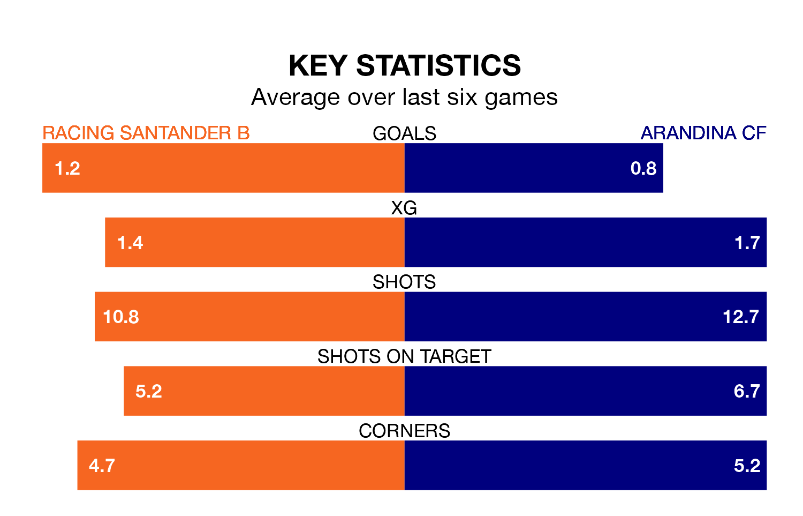

Struggling Arandina CF face Racing Santander B away on Sunday looking to build on a win in their last league outing.
After securing all three points with a 2-1 victory over Real Avilés on April 13, Arandina sit bottom of the Segunda División RFEF Group 1.
They travel to play a Racing Santander B side sixth in the standings, who also won their last match, 1-0 against Club Marino de Luanco, on April 14.
With 43 goals in 31 games so far this season, Racing Santander B are the league's third-highest scorers with 1.4 goals per game. But they are conceding more than average too, letting in 36 goals at a rate of 1.2 per game.
Arandina, meanwhile, are below average scorers, with 1.0 goal per game, compared to a league average of 1.1. They have conceded 1.3 goals per game.
The home side are in mixed form in the Segunda División RFEF Group 1, with two wins and three draws from their last six games.
With two wins and two draws over that period, the visitors' form is slightly worse – they have taken eight points from 18, compared to Racing Santander B's nine.
Updated: 15:40 (UTC), 18/04/24